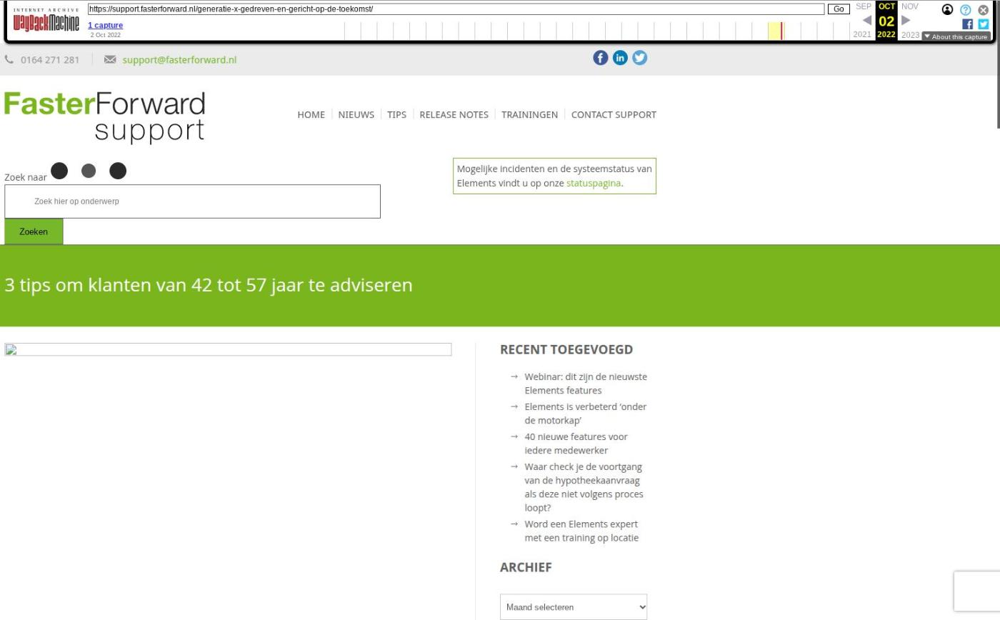

3 tips om klanten van 42 tot 57 jaar te adviseren

Tekstinhoud
Generatie X is geboren tussen 1965 en 1980, zijn 42 tot 57 jaar en worden ook wel de ‘Verloren Generatie’ genoemd. Ze zijn gedreven, op het hoogtepunt van hun carrière en hun kinderen zijn grotendeels zelfstandig. De crisissen die ze hebben meegemaakt maakt deze groep sceptischer dan andere generaties. Bovendien zijn ze op zoek naar gemak en ontzorging om zo min mogelijk stress te hebben.
We hebben ons eerder verdiept in de babyboomers en de millennials. In dit artikel verdiepen we ons in Generatie X. Hoe verloopt de communicatie met deze generatie en hoe kan je ze het beste adviseren? Dat leggen wij uit in deze blog.
De inzichten en tips in dit artikel zijn gebaseerd op andere artikels en onderzoeken. Het uitvoeren van deze tips is niet voor ieder advieskantoor een garantie tot succes. Kijk zelf wat goed past bij jouw organisatie en probeer nieuwe dingen uit. Zo kom je erachter welke middelen het meest geschikt zijn voor jouw klanten.
1. Werk en privé moeten in balans zijn
Onder de X-er heeft het ‘nieuwe werken’ steeds meer vorm gekregen. Ze werken graag flexibel: op verschillende locaties en op de momenten die hen het beste uitkomt. Hiermee creëren ze een evenwichtig balans tussen werk en privé.
Het organiseren van hun werk is ook heel belangrijk omdat ze vaak hun ouders én kinderen verzorgen. Dit kost tijd en energie, waardoor ze graag ontzorgt willen worden met gemakkelijke oplossingen (zoals Hello Fresh).
Maar hoe spreek je deze generatie het beste aan? Hoe kun jij je klant helpen aan het gevoel van balans? We geven je een aantal tips.
Ontzorg van A tot Z
Zorg voor volledige financiële ontzorging, nu en in de toekomst. Focus dus niet alleen op het regelen van de hypotheek, maar adviseer ook over pensioen, verzekeringen, vermogen, sparen en kredieten. Als je klant het gevoel heeft dat hij financieel zijn zaken goed heeft geregeld, worden jouw diensten beter gewaardeerd. Je ontzorgt de klant namelijk van financiële stress.
Bied gemak aan
De X-er wil graag niet te veel tijd verspillen. Bied daarom digitale mogelijkheden aan om de klant het zo makkelijk mogelijk te maken. Denk aan een online klantportaal (Digimap) slimme online formulieren (Actiefbeheerscan, Digital Only), betalen met iDEAL (Mollie) en videobellen (Webdelen).
Houd het positief
Presenteer simpele oplossingen om stress te voorkomen. Doe dit bijvoorbeeld door negatieve zaken om te zetten naar positiviteit.
Maak het makkelijk met abonnementen
Generatie X hecht waarde aan abonnementen die het leven makkelijker maken. Denk hier aan het wekelijks bezorgen van boodschappen. Ze hechten hierdoor ook veel waarde aan een service abonnement waarbij de adviseur alle financiële zaken up-to-date houdt. Let wel op dat je uitgebreid de voordelen en de tijdsbesparing uitlegt om de klant te overtuigen.
2. Sceptisch en laag in vertrouwen
Generatie X groeide op tijdens een economische crisis. Er was veel werkeloosheid onder de jeugd, waardoor het voor een net-afgestudeerde erg lastig was om een baan te vinden. Waar Babyboomers protesteerden en hun plek opeisten, zocht Generatie X naar hun plek in de maatschappij. Ze protesteerden niet, maar zijn juist zelfstandig en nuchter. Daarnaast worden ze gekenmerkt door relativisme en individualisme.
Daarnaast groeide de X-ers op tijdens de koude oorlog. Hierdoor kwamen ze in aanraking met de negatieve kant van het kapitalisme. Door mondiale krachten was het bijvoorbeeld ineens niet meer mogelijk om te tanken. Ook andere schandalen, zowel in de politiek als bij bedrijven, zorgden ervoor dat ze veel vertrouwen verloren. Hierdoor zijn ze een stuk sceptischer dan andere generaties.
Het is daarom belangrijk om als financieel adviseur deze sceptische gedachten weg te nemen. Dat doe je bijvoorbeeld door de volgende tips toe te passen.
Wees transparant in je advisering
Bedrijven worden tot vier keer meer vertrouwd wanneer ze zien waar je mee bezig bent en wordt meegenomen in het proces. Neem de klant daarom mee door het proces en laat ze meekijken op je scherm. Zo zien ze hoe verschillende mogelijkheden tot stand komen.
Laat jezelf zien
Creëer vertrouwen door jezelf, je collega’s en je bedrijf tentoon te stellen. Als financieel adviseur moet je betrouwbaar overkomen. Dit doe je door te laten zien wie je bent en waar je voor staat.
Erken hun input
De klantervaring en het meenemen van feedback zijn erg belangrijk. Laat de klant daarom feedback geven én neem het mee. Laat bovendien de uiteindelijke keuze altijd aan de klant. Laat uit je aanbod bijvoorbeeld de verschillende opties zien, zodat de klant zelf kan kiezen.
Toon je kennis
De huizenprijzen zijn de afgelopen jaren enorm toegenomen. Hierdoor hebben veel X-ers overwaarde die ze kunnen benutten. Wellicht willen ze verbouwen, verhuizen of zijn ze op zoek naar een recreatiewoning, zoals een tweede woning in het buitenland. Houd daarom de waarde van hun woning in de gaten (PortefeuilleSignalen) en informeer klanten over actueel woningaanbod (MijnHuiszaken).
Adviseer gevestigde aanbieders
Rabobank, ING en ABN AMRO zijn gevestigde namen in de hypotheekmarkt. Hierdoor worden deze banken door Generatie X vaker geprefereerd dan nieuwe hypotheekaanbieders. Adviseer daarom deze aanbieders en vertel de verschillen met alternatieve aanbieders.
3. Pragmatisch en gericht op de toekomst
Uit onderzoek blijkt dat X-ers pragmatischer zijn dan andere generaties. Mensen die geboren zijn tussen 1970 en 1980 worden ook wel de ‘Pragmatische Generatie’ genoemd. Daarnaast gaan ze gemiddeld zuiniger met hun geld om. Dit komt vooral doordat ze gericht zijn op de toekomst. Ze sparen voor later en houden een spaar-buffer om voorbereid te zijn op eventuele financiële tegenslagen.
Hoe speel je hierop in? We geven je twee tips.
Help besparen
Adviseer over besparen op bijvoorbeeld energie (o.a. zonnepanelen) of levensverzekeringen. Signaleer bespaar-mogelijkheden op een hypotheek of ORV met PortefeuilleSignalen. Houd ook de andere lopende verzekeringen up-to-date door het pakket regelmatig te vergelijken via My TP.
Maak een financieel plan
Zorg dat de klant precies inzichtelijk heeft wat zijn inkomsten en kosten zijn. Nu en in de toekomst. Iedereen heeft baat bij inzicht in zijn situatie bij pensioen, overlijden of arbeidsongeschiktheid. Maak daarom een uitgebreid financieel plan (met FinRust).
Bronnen
ING Live Generatietrends: (Trendsactive, ING, 2021). Video
Millennials vs. Generatie X op de werkplek: verschillen en overeenkomsten. (Surveymonkey, 2021). Artikel
Generatie X en hun kernwaarden: ‘Verloren Generatie’ aan de top. (CompanyMatch, 2016). Artikel
Babyboomer, Generatie X, Millennial of iets ertussenin. (Business Insider, 2018). Artikel
Foto’s via Unsplash: Visual Stories || Micheile, Christina @wocintechchat.com, Headway.
Geplaatst op 2 januari 2022 (Laatste update: 17 augustus 2022)